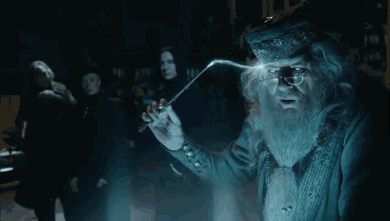

This deck needs a recent Chrome.
Manager in the AI era
Tomasz Szturo
The evening is
mine again.
January to October 2026: what changed when
a second brain of agents started working for me.
Project Dune · show and tell
Tuesday, 13 October 2026
01 · January
13 January 2026 a Tuesday
11unread emails
7snoozed in Slack
19tasks on the list
“So… what do we talk about today?”me, at the start of every 1:1
03 · The second brain

Dumbledore moves a memory into the Pensieve
I pulled it all
out of my head.
One Claude session on top of all my notes, always open.
I ask it anything, and it already knows the context.
04 · The setup
One Mac mini. Many agents, always on.
05 · October
13 October 2026 today, also a Tuesday
2unread
was 11
0snoozed
was 7
6tasks
was 19
06 · Trust
Why I trust it
Rails, not prompts
Every project has a wiki the agents read first. No guessing.
Reviewers with opinions
Agents with different lenses check the work before I see it.
Pushback by default
Agents are told to disagree with me. Agreement is not a feature.
Pictures, not paragraphs
One picture I can check in ten seconds.
Part 2 · the same Tuesday, as a process
One token, then many. I step in three times, for minutes.
meagent